新手教程Tutorials
游戏里的 14 张图文教程，按游戏文本表里的顺序排列，图片和文字都是游戏原样。
The 14 picture tutorials from the game, in the order of the game's text table; pictures and text exactly as in the game.
教程 1Tutorial 1
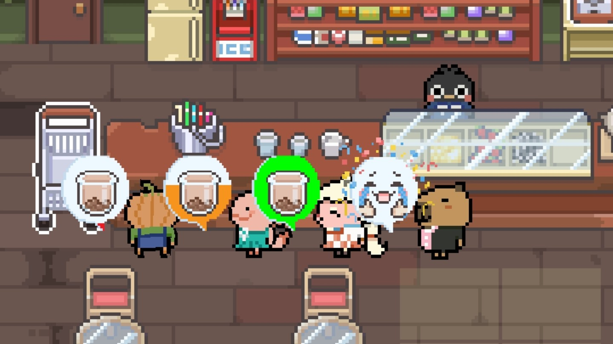
奶茶店中的订单分为两种，第一种叫做“外带订单”:客人们会遇到偶尔赶时间或者想路上边走边喝的情况。这部分客人的订单往往比较着急。
The orders in the milk tea shop are divided into two types. The first type is called "takeout orders": customers may be in a hurry or want to drink while walking. These customers' orders are often urgent.
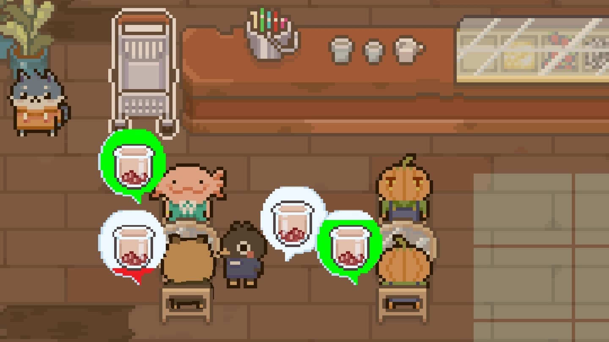
第二种订单叫做“堂食订单”:这部分客人们享受在店里慢慢品尝饮品的时光，这部分客人的订单不太着急，但往往会对店面的环境和服务有所要求。
The second type of order is called "dine-in orders": these customers enjoy the leisurely time to taste their drinks in the shop. These customers' orders are not very urgent, but they often have certain requirements for the environment and service of the store.
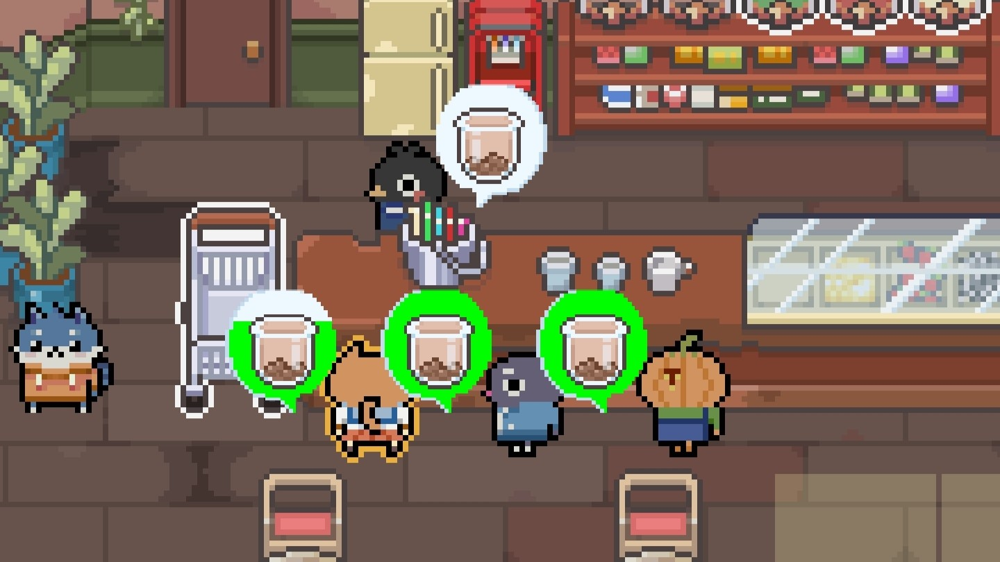
在外带订单的情况下，玩家可以自由的选择交给有相应订单的顾客即可。
In the case of takeout orders, players can freely choose to give the corresponding orders to the customers.
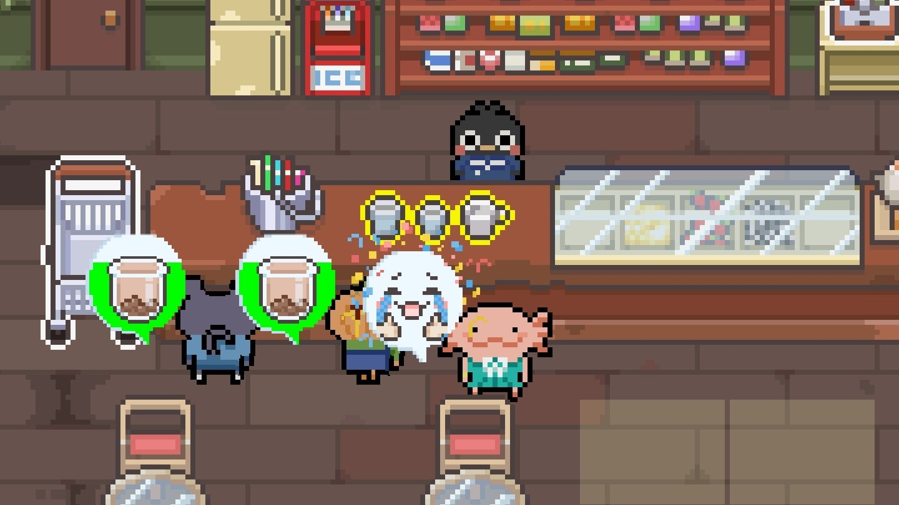
玩家也可以根据排队和制作的实际情况自由安排先给哪位顾客。
Players can also freely arrange which customer to serve first based on the actual situation of the queue and production.
教程 2Tutorial 2
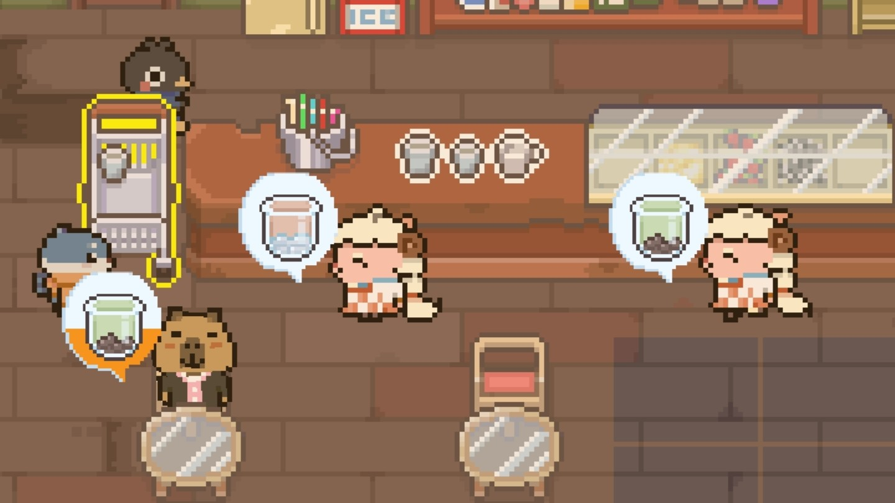
在制作堂食订单时，玩家可以把制作好的饮品放入左侧的小推车中，等待店员前去堂食区配送，能够帮助省下很多时间呢!
When making dine-in orders, players can put the prepared drinks into the small cart on the left and wait for the staff to deliver them to the dining area, which can save a lot of time!
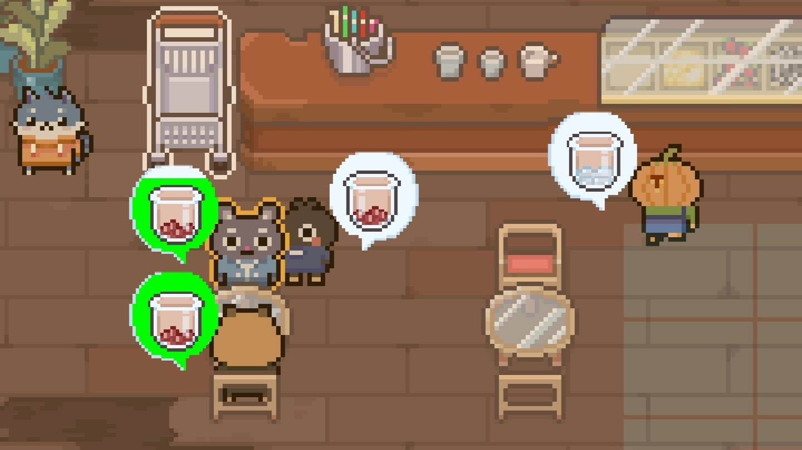
在店员过于忙碌或者有更急迫的堂食订单时，玩家也可以选择自行配送以达到节约时间的作用。
When the staff is too busy or when there are more urgent dine-in orders, players can also choose to deliver the orders themselves in order to save time.
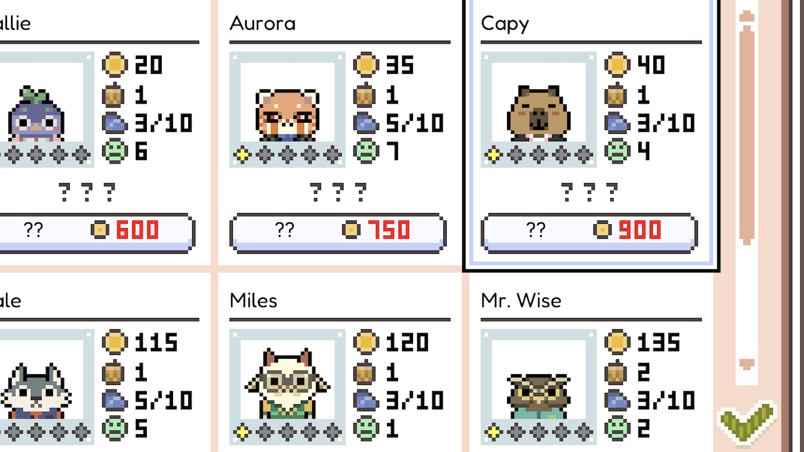
这里是店员管理界面，你可以在这里查看、管理奶茶店的店员!每位员工都有自己的特殊技能，能帮助你更高效地经营店铺。请合理安排店员，利用他们的技能提升服务质量吧!
You can view and manage your staff here! Each employee has special skills that help you run the shop more efficiently.
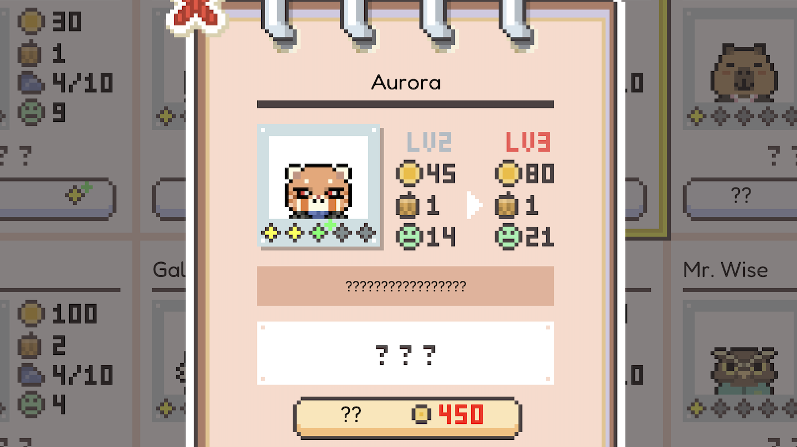
请合理安排店员，利用他们的技能提升服务质量吧!
Arrange your staff and make the most of their skills to enhance the quality of your service!
教程 3Tutorial 3
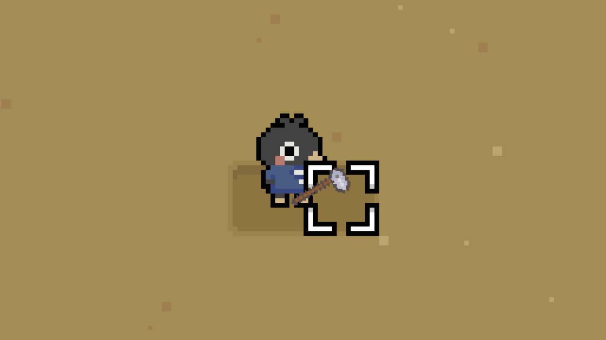
种植农作物需要锄地、浇水和播种。请使用切换道具键来选择并使用相应的道具。
Planting crops requires tilling the soil, watering, and sowing seeds. Please use the tool switch key to select and use the appropriate tools.
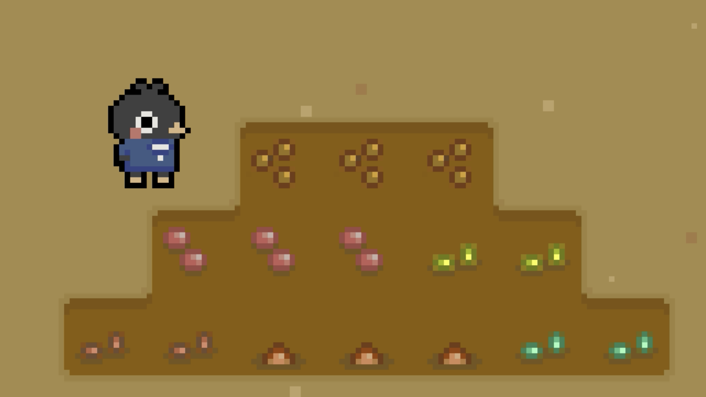
在锄地、浇水和播种之后，只需要每天继续浇水并等待收获即可。
After tilling the soil, watering, and sowing the seeds, all you need to do is continue watering daily and wait for the harvest.
教程 4Tutorial 4
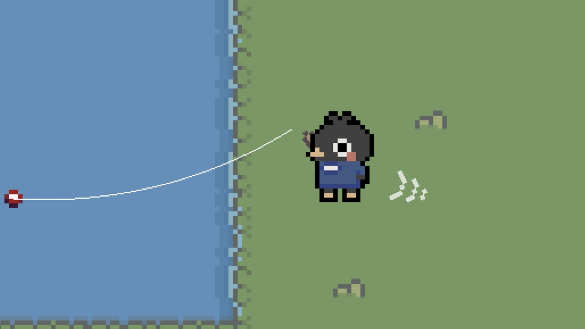
玩家在钓鱼前，需要先用道具切换键切换到钓鱼竿，并用互动键进行钓鱼。
Before fishing, players need to switch to the fishing rod using the tool switch key and then use the interaction key to fish.
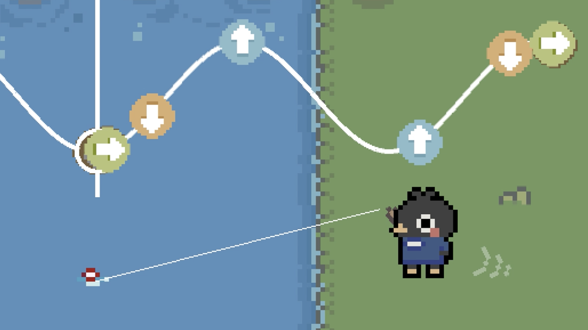
在钓鱼时，玩家需要听准乐曲的节奏，并及时使用相应的方向键进行互动，这样就能成功钓上鱼!
When fishing, players need to listen to the rhythm of the music and use the corresponding directional keys in a timely manner to successfully catch a fish.
教程 5Tutorial 5
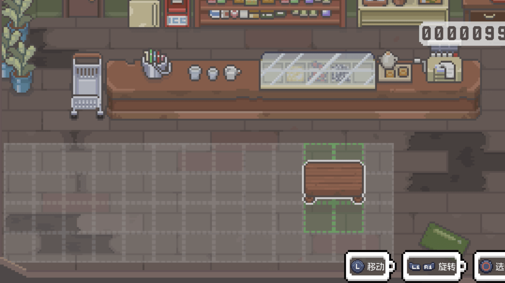
在商店界面使用切换键浏览家具，选择后点击购买键购买。每种家具的价格和库存会显示在下方的面板中。
In the store interface, use the toggle key to browse furniture. After selecting, click the purchase button to buy. The price and stock of each piece of furniture will be displayed on the panel below.
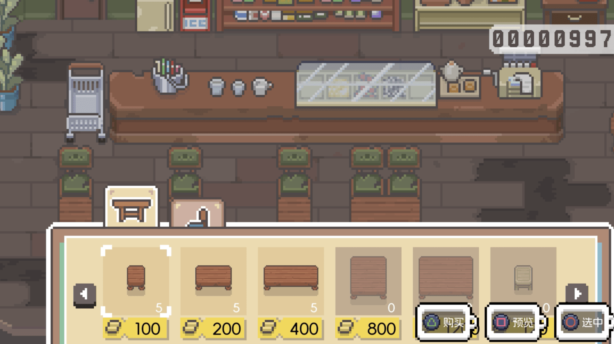
在摆放界面中，选择家具摆放或取消，用移动键调整位置，旋转键改变方向。
In the placement interface, choose to place or cancel furniture, use the movement keys to adjust the position, and the rotation key to change the direction.
教程 6Tutorial 6
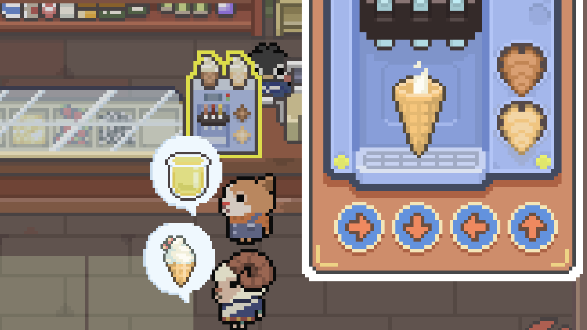
当你启动冰淇淋机时，屏幕上会随机出现一系列按键提示，你需要按照正确的顺序迅速按下相应的按键。按键顺序是随机的，所以要保持专注，快速反应!
To make ice cream, complete the QTE (Quick Time Event) by pressing the correct button sequence shown on screen. Succeed to get delicious ice cream, but fail and you'll get nothing!
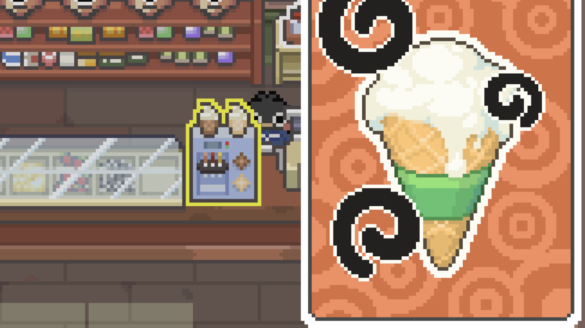
如果在QTE过程中按错了按键，冰淇淋可能会失败。
Note: The button order is random each time-stay focused and react fast! If you press a wrong button during the QTE, the ice cream will fail.
教程 7Tutorial 7
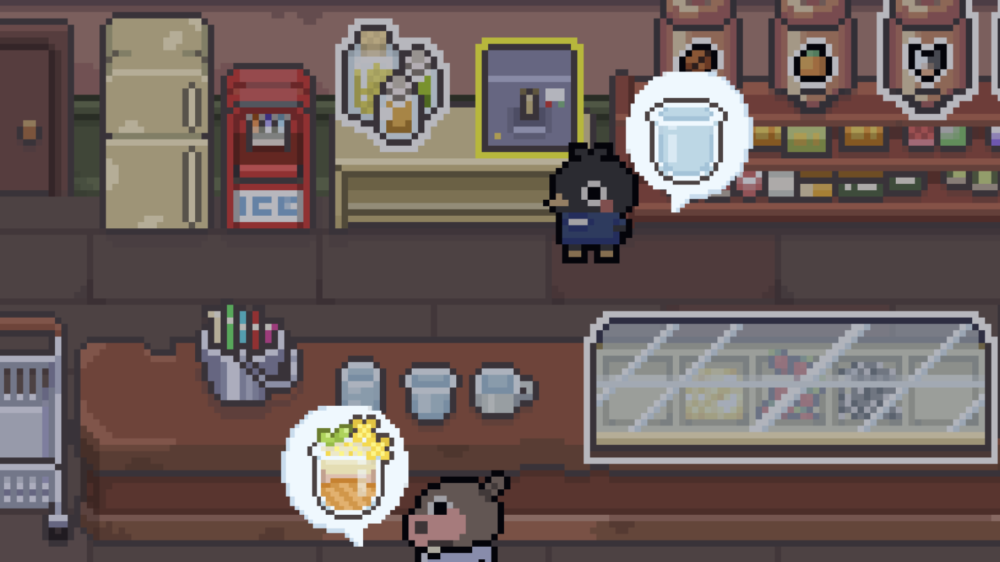
有的饮品在制作过程中需要加入奶泡。你可以将正在制作的饮品放入奶泡机中，奶泡机需要一定时间来完成打泡。在此期间，你可以处理其他订单。
Some drinks require milk foam during preparation. You can place the drink into the frother to create foam. The frother takes some time to finish the process, during which you can handle other orders.
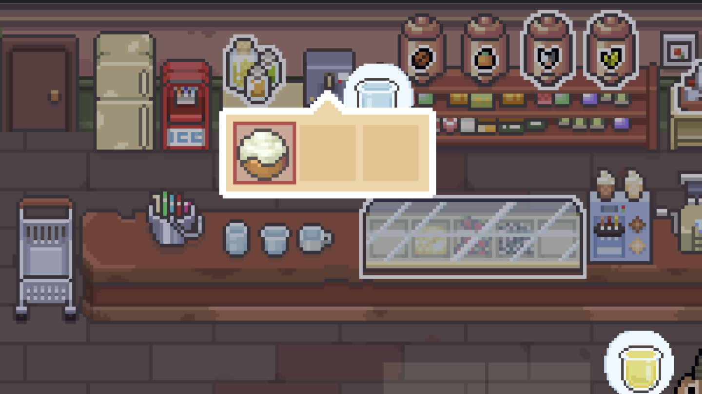
请注意，当奶泡机停止后，你需要腾空双手才能取出饮品。因此，如果手中有其他饮品，请先完成当前订单!
Note: Once the frother stops, you need both hands free to retrieve the drink. So, if you're holding another drink, complete that order first!
教程 8Tutorial 8
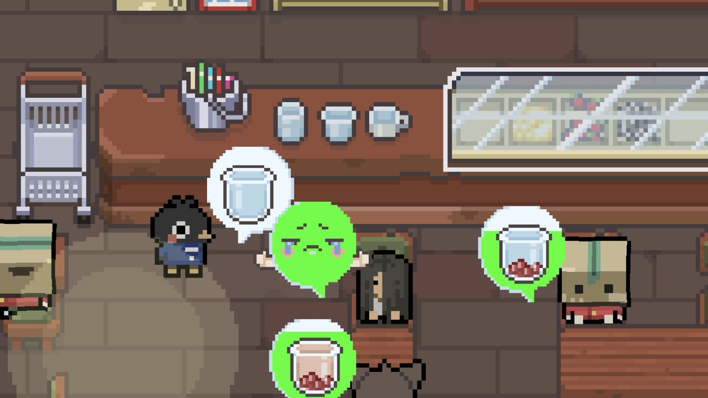
夜晚降临，会有奇特的客人上门......
As night falls, peculiar visitors will arrive...
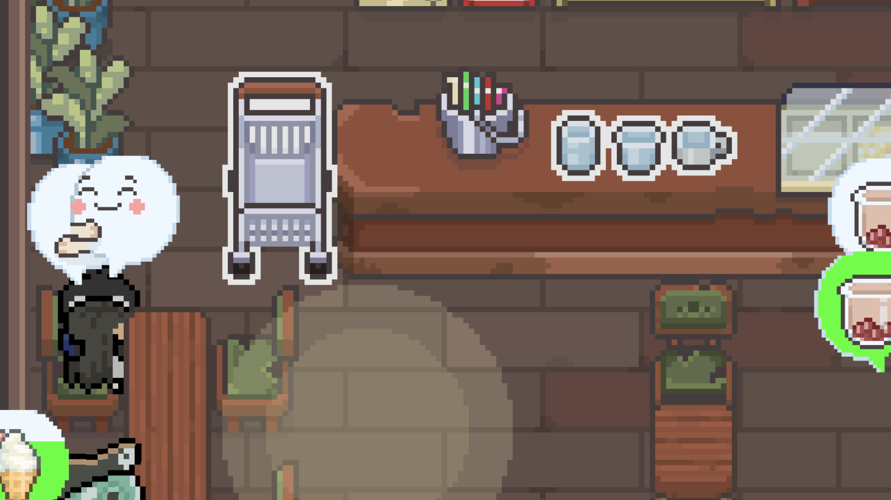
除了正常的奶茶订单外，还会增加很多意料之外的订单!请保持专注和好奇心吧!
Beyond regular milk tea orders, you'll face bizarre requests! Stay alert and embrace the unexpected!
教程 9Tutorial 9
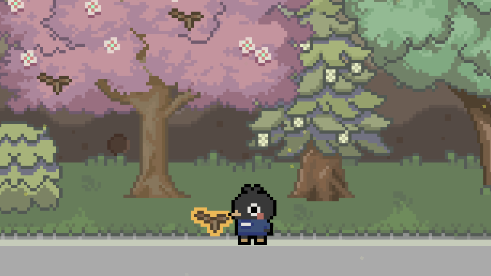
路过树木时，记得低头看看树下有没有掉落的小树枝哦!
When passing by trees, remember to check under them for any fallen branches!
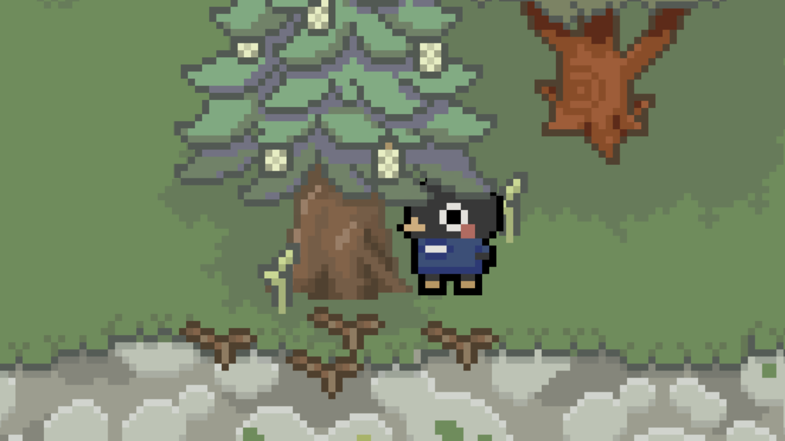
多多收集小树枝吧，非常有用哦!
Collect as many branches as you can-they'll definitely come in handy!
教程 10Tutorial 10
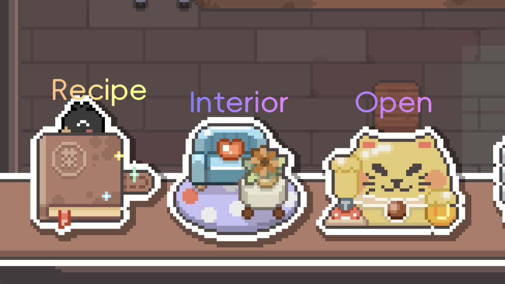
找到了爷爷的手写笔记!点击笔记可以查看当前获得的饮品配方。随着等级提升，可以逐步解锁更多饮品。
You've found Grandpa's handwritten notes! Tap the notes to view unlocked drink recipes. As your level increases, new recipes will become available.
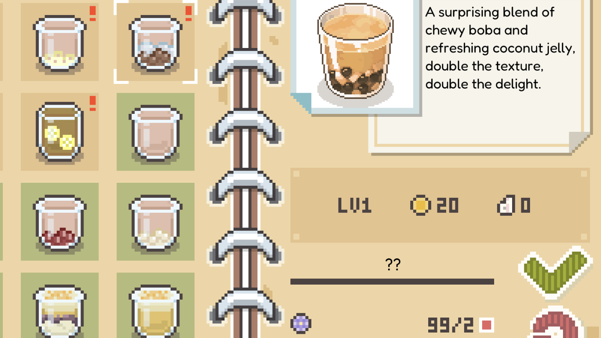
解锁新配方需要消耗一定数量的“梦境精华”。完成梦境战斗后可以获得更多“梦境精华”，记得多多收集哦!
Unlocking each new recipe costs a certain amount of Dream Essence, which you can collect by defeating nightmares during dream adventures. Keep collecting Dream Essence to expand your menu!
教程 11Tutorial 11
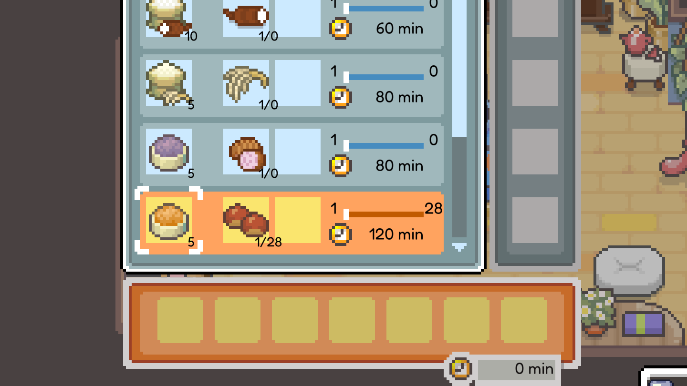
欢迎来到避雨巷奶茶的配方研究室!这台橘色的机器是研磨机，将获得的原材料放入研磨机中，等待一段时间后即可获得研磨后的食材!
Welcome to our Lab! Put raw materials into this grinder. After waiting for a period of time, you will obtain ground ingredients!
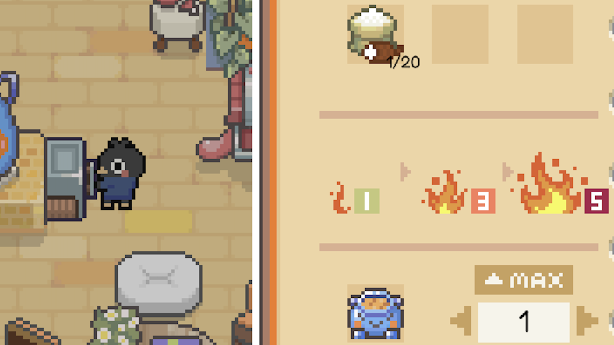
不同食材需要不同的火候控制。请在合适的火候按下按键完成操作。
部分食材在制作过程中火候会发生变化，需多次按下按键完成多阶段互动哦!
Different ingredients require specific heat levels. Press the button at the right moment to complete the interaction.
Note: Some ingredients may change heat requirements during the process, requiring multiple rounds of adjustments.
教程 12Tutorial 12
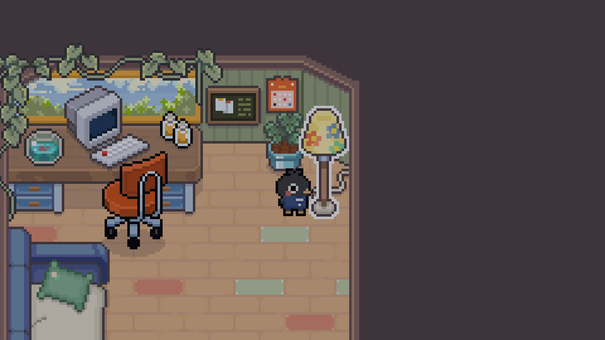
关闭台灯后入睡，将会进入梦境战斗。
If you turn off the lamp and fall asleep, you will enter a Dreamland battle.
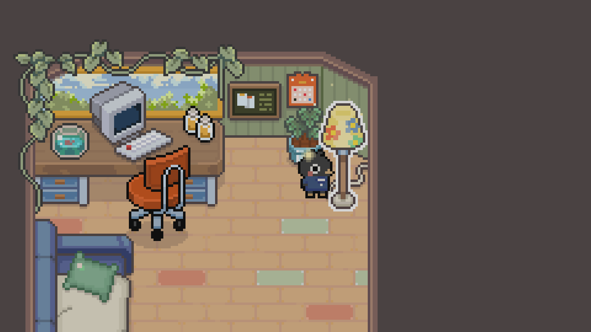
这是一盏神奇的灯。点亮它，即可避免夜晚进入梦境参与战斗。
This is a magical lamp. Lighting it will prevent you from entering the Dreamland and fighting at night.
教程 13Tutorial 13
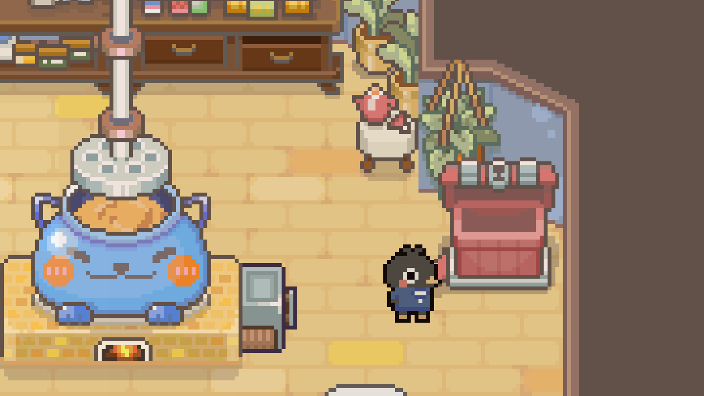
完成第一章后，研发室会解锁“小料箱”。你可以把饮品材料、原材料和半成品放进去，制作和研发时都能更方便地取用。
After completing Chapter 1, the R&D room unlocks the Ingredient Box. Store drink supplies, raw materials, and prepared ingredients there for easier research and crafting.
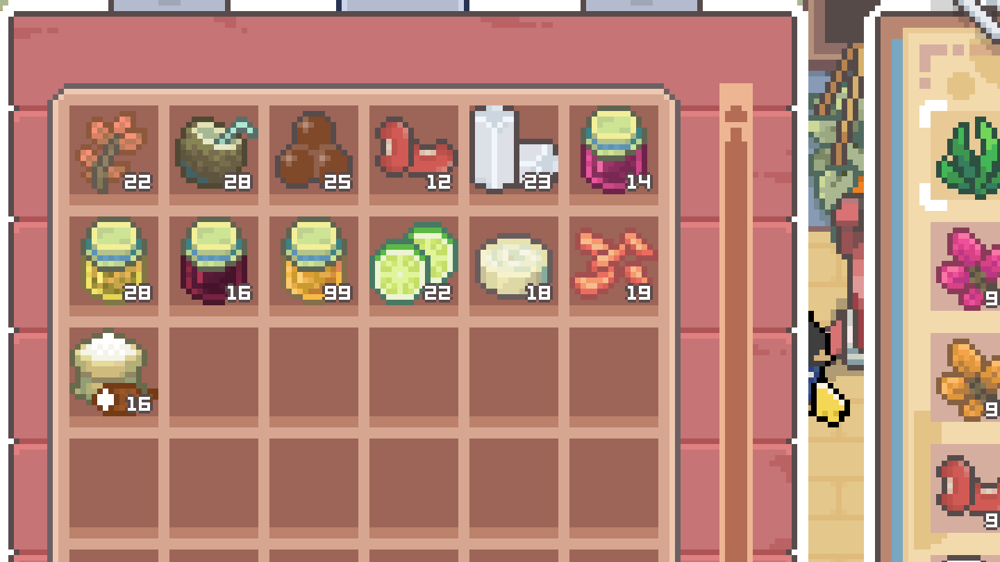
小料箱容量不限，并支持自动整理。研发配方和制作饮品时，系统会同时检查背包和小料箱中的材料，不用再频繁整理背包啦!
The Ingredient Box has unlimited space and supports Auto Sort. When researching recipes or making drinks, the system checks both your bag and the box, so you can spend less time managing your bag!
教程 14Tutorial 14
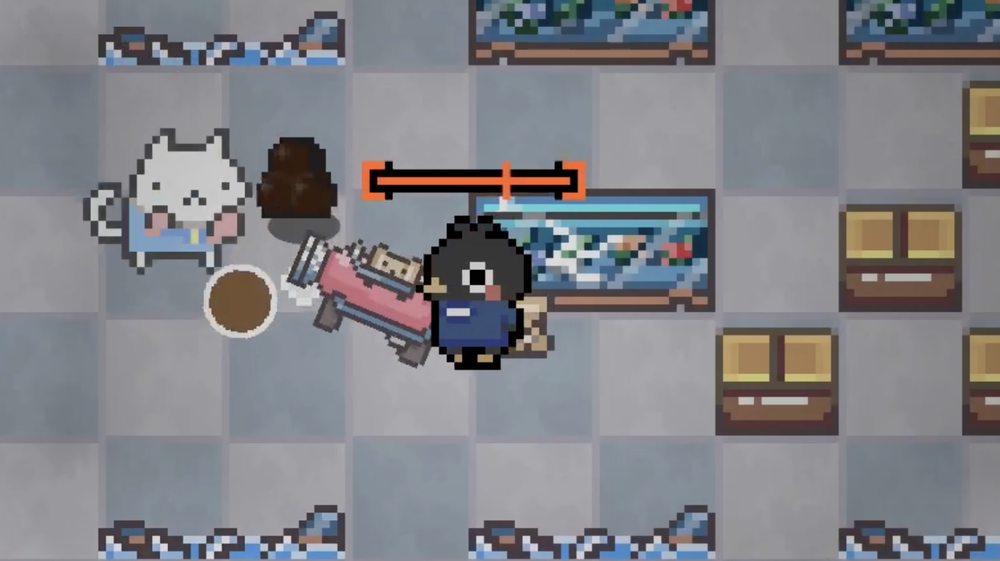
战斗说明:
啵啵在梦境中，曾经恐惧的怪物游荡其中，随机掉落奶茶原料。
探索地图，找到出口或击败首领怪物，帮助啵啵逃离梦境，收集更多原料吧!
Battle Instructions:
Bobo is in a dream world where monsters he once feared roam, randomly dropping ingredients for boba tea.
Explore the map, find the exit or defeat the boss to help Bobo escape the dream and collect more ingredients!
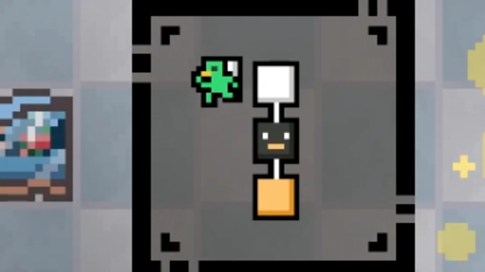
地图说明:
白色格子:未探索的房间。黑色格子:当前所在位置。黄色格子:已探索的房间。带有绿色标志的格子:出口，找到即可逃离梦境。带有骷髅头的格子:首领怪物房间，击败首领也可逃离梦境。
Map Instructions:
White tiles: unexplored rooms. Black tile: your current location. Yellow tiles: explored rooms. Tiles with a green symbol: exits; find one to escape the dream. Tiles with a skull symbol: boss monster rooms; defeat the boss to escape the dream.